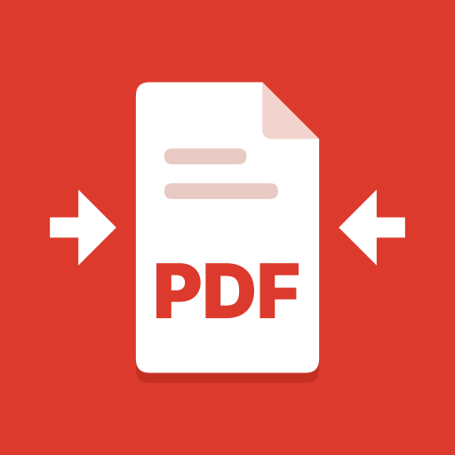

Exam, job and government portals reject uploads that miss a size limit: under 100 KB, under 200 KB, or "between 50 KB and 300 KB". FitMyPDF (formerly PDF Crush) is a free Android app built for exactly that. Type the size you need and it finds the best quality that fits, keeping text sharp and selectable whenever the size allows; if a form also sets a minimum, a file that is too small is made bigger to meet it. It also turns a photo or signature into a JPG of the exact KB range and pixel size a form asks for, with presets read from official notices (JEE Main, NEET UG, UPSC, SSC CHSL). It scans paper straight to a PDF at the size you choose, opens large PDFs quickly, and includes merge, split, images-to-PDF and password tools. There are no ads, no watermark and no limits, and the app has no internet permission, so files never leave the phone. A free browser version works on any computer, also without uploading anything.
| Price | Free. No ads, no in-app purchases, no watermark, no daily limits |
| Platform | Android 8.1 and newer |
| Current version | 3.3.0 (November 2026) |
| Languages | English, Hindi, Bengali, Indonesian, Portuguese, Spanish, Arabic, Vietnamese, Turkish, French |
| Web version | dev114453.github.io/tools/compress-pdf.html (runs in the browser; the file is not uploaded) |
| Developer | developer1021 |
| Google Play | https://play.google.com/store/apps/details?id=com.pdfcompress.start |
| Press contact | devloper1021@gmail.com |
Click for full size (1080 x 1920). App icon (512 x 512).